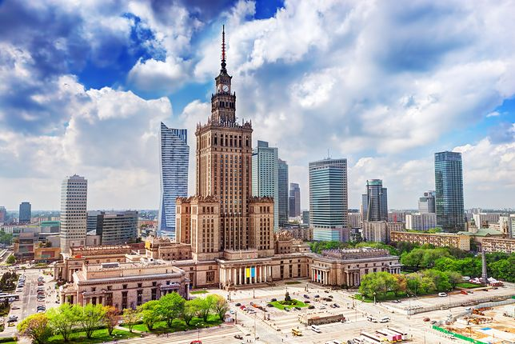

Warszawa

Zabytki:
- Zamek Królewski i plac Zamkowy
- Stare Miasto
- Nowe Miasto
- Śródmieście
- Bielany i Żoliborz
Ciekawostki:
- Nazwa miasta zaczęła pojawiać się w dokumentach w XIV wieku jako Warszewa, a od XV wieku również jako Warszowa.
- Legendarna etymologia wywodzi nazwę miasta od imion Warsa i jego żony Sawy.
- Pierwszymi osadami powstałymi w obecnych granicach administracyjnych Warszawy były: Bródno (IX/X wiek), Kamion (II połowa XI wieku), Solec (XI wiek) i Jazdów (XIII wiek). Po zdobyciu i zniszczeniu w 1262 Jazdowa przez wojska Mendoga, książę płocki Bolesław II mazowiecki założył ok. 4 km na północ od Jazdowa nowy gród książęcy i nowe miasto (podgrodzie), które wspólnie nosiły nazwę Warszowa. Około 1300 nastąpiła lokacja miasta Stara Warszawa na prawie chełmińskim.